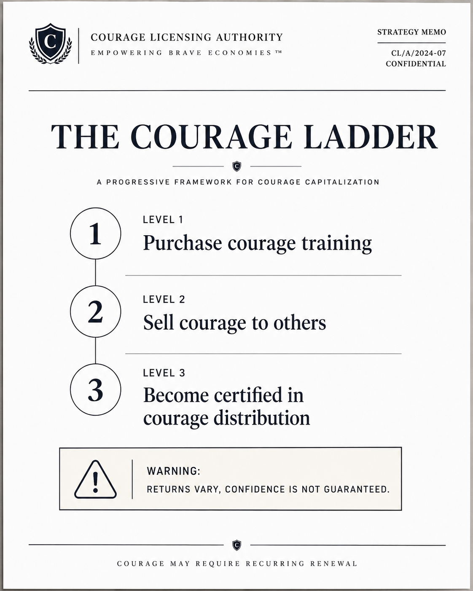
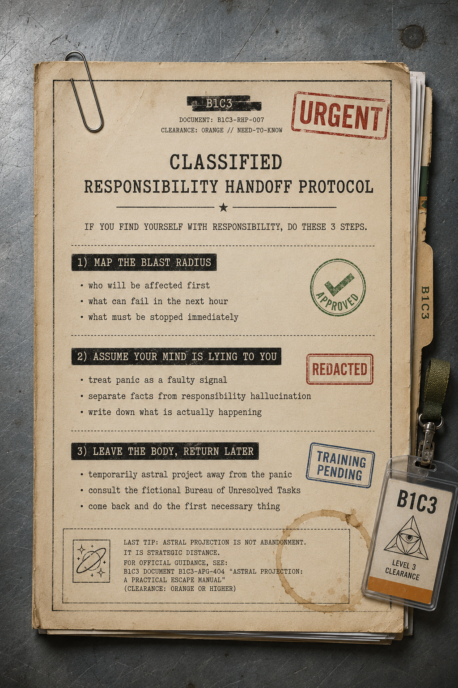
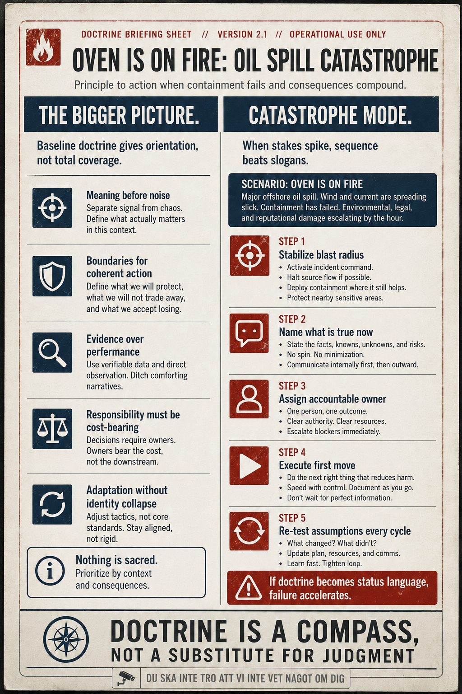
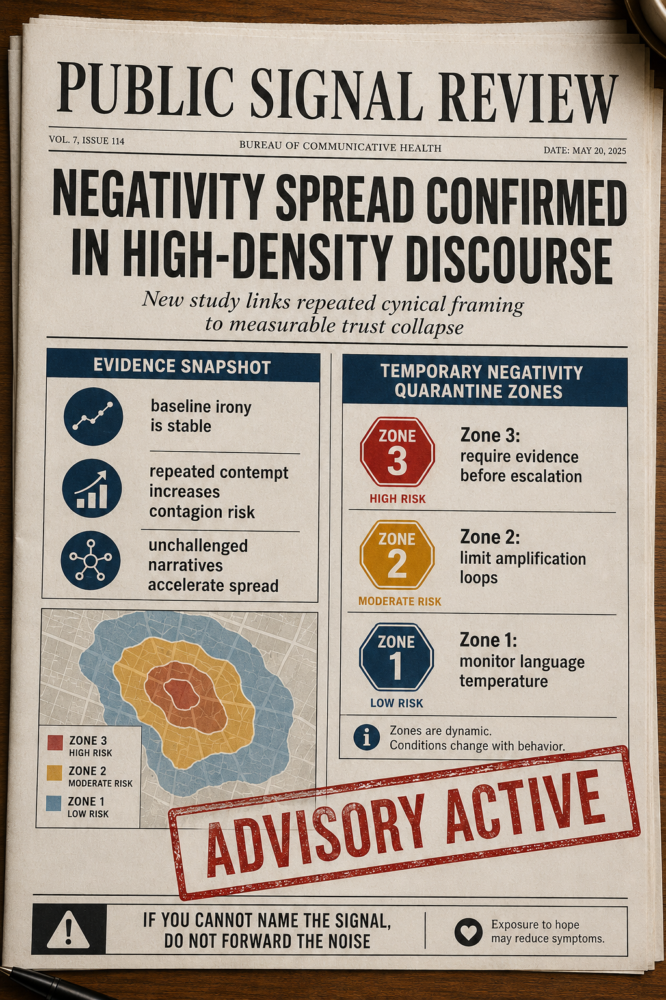
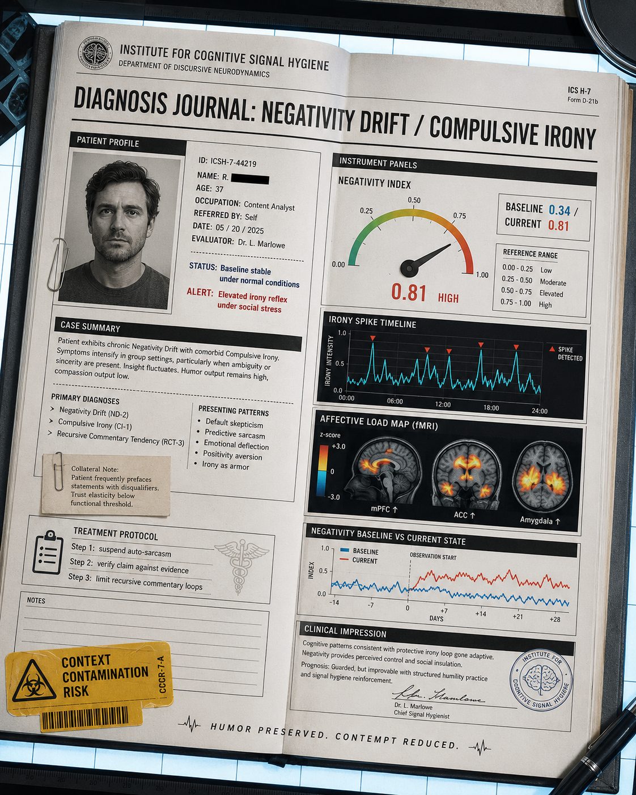
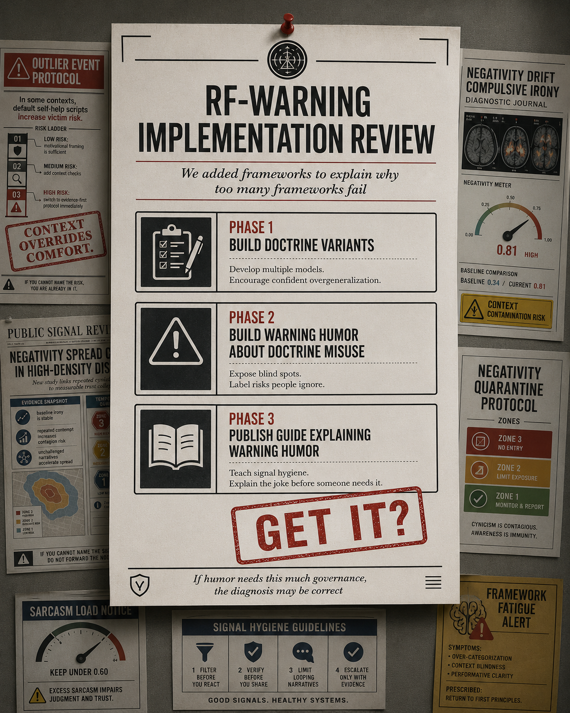

Why This Started
This began as a meme workflow and became a method problem. The first posters looked good, but they were often generic. We needed satire that did not just signal tone, but improved decision quality under pressure.
The shift was RF-warning: righteous fire plus warning framing plus Schrodinger truism. In plain language: take polite principles and force them to survive high-stakes context.
The Method in Four Moves
- Start from a truism: take responsibility, tell the truth, context matters.
- Translate it into operational consequence language.
- Deliver it as a warning artifact: bulletin, protocol card, white paper, diagnosis journal.
- Add one dry absurd detail so the humor lands without collapsing into nonsense.
Showcase Arc
The arc below is the key point. The project moved from visual satire to usable warning logic.
1) Baseline Tone (strong visual, weak specificity)
2) Recursion Satire Becomes Legible
3) Bureaucratic Absurdity Prototype (Precursor)

4) Document-First Warning Frame

5) Kernel Doctrine: Necessary, Not Sufficient

6) Self-Help Meets Outlier Risk

7) Civic Media Advisory Frame

8) Clinical Diagnosis Journal (Deep Variant)

9) Implementation Review (Closing Self-Roast)

What This Actually Says About Doctrine
Doctrine is useful when it changes decisions, not when it only improves language. A principle that cannot survive catastrophe constraints is under-specified. A principle that cannot be overridden by context is being treated as sacred.
That is where RF-warning helps. It does not reject principles. It stress-tests them.
Closing Self-Roast
The final image should roast this process too: we built multiple doctrines, then overexplained the humor so the humor would work. In other words, we built a warning system about over-framing by adding more framing.
Get it?
This was not a detour from doctrine work. It was doctrine stress testing through satire.